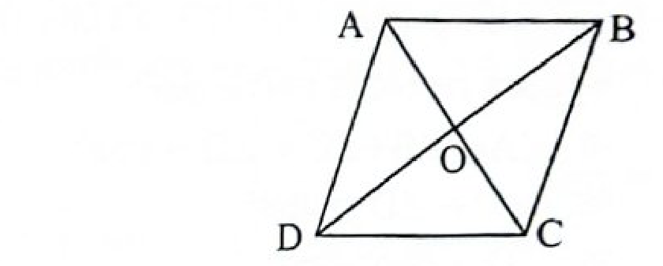
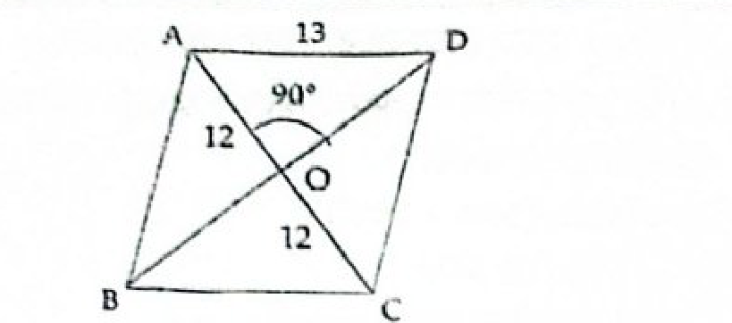
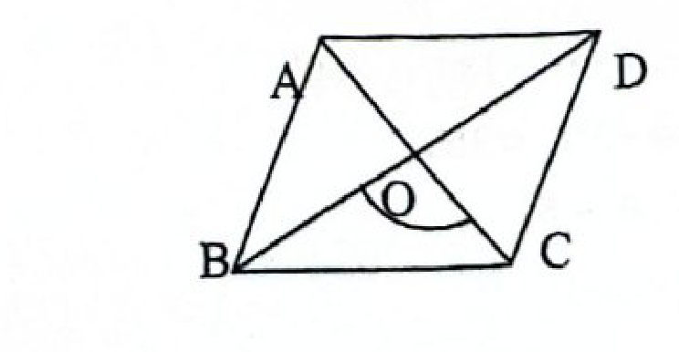

বর্গক্ষেত্র হলো এমন একটি চতুর্ভুজ যার চারটি বাহুই সমান এবং প্রতিটি কোণ সমকোণ (৯০°)। আয়তক্ষেত্রের বিপরীত বাহু সমান এবং ট্রাপিজয়েডের মাত্র একজোড়া বিপরীত বাহু সমান্তরাল।
আমরা জানি, চতুর্ভুজের যে কোনো কর্ণ চতুর্ভুজটিকে দুটি ত্রিভুজে বিভক্ত করে। প্রতিটি ত্রিভুজের তিন কোণের সমষ্টি ১৮০° বা ২ সমকোণ। সুতরাং, চতুর্ভুজের চার কোণের সমষ্টি = ১৮০° × ২ = ৩৬০° = ৪ সমকোণ।
০৩
বিভিন্ন মন্ত্রণালয়ের উপ-সহকারী প্রকৌশলী (সিভিল)-১৯
ABCD চতুর্ভুজের ∠A + ∠B + ∠C = 240° হলে, ∠D এর মান কত?
যে চতুর্ভুজের বিপরীত বাহুগুলি পরস্পর সমান ও সমান্তরাল তাকে কি বলে?
💡 সঠিক উত্তর: ক | ব্যাখ্যা:
সংজ্ঞা অনুসারে, যে চতুর্ভুজের বিপরীত বাহুগুলো পরস্পর সমান ও সমান্তরাল তাকে সামান্তরিক বলে। যদি কোণগুলো সমকোণ হতো তবে তা আয়তক্ষেত্র হতো।
০৮
তথ্য মন্ত্রণালয় (সুপারিনটেনডেন্ট)-১৯
আয়তক্ষেত্রের সন্নিহিত বাহুর মধ্যবিন্দুসমূহের সংযোগে যে চতুর্ভুজ হয়, তা একটি-
💡 সঠিক উত্তর: ক | ব্যাখ্যা:
যেকোনো আয়তক্ষেত্রের বাহুগুলোর মধ্যবিন্দু পরপর যুক্ত করলে একটি রম্বস উৎপন্ন হয় (যার চারটি বাহু সমান কিন্তু কোণগুলো সমকোণ নয়)। বিপরীতক্রমে, রম্বসের বাহুর মধ্যবিন্দু যুক্ত করলে আয়তক্ষেত্র হয়।
০৯
পিএসসি (জেলা ক্রীড়া কর্মকর্তা)-২৩
ABCD সামান্তরিকের কর্ণদ্বয় পরস্পর O বিন্দুতে ছেদ করে। ∠AOD = 40° হলে ∠COD সমান কত?
💡 সঠিক উত্তর: গ | ব্যাখ্যা:
AC কর্ণের উপর O বিন্দুতে ∠AOD এবং ∠COD পরস্পর রৈখিক সন্নিহিত কোণ। সুতরাং, ∠AOD + ∠COD = 180° বা, 40° + ∠COD = 180° ∴ ∠COD = 180° - 40° = 140°।
১০
সমাজসেবা অধিদপ্তর (প্রবেশনারী অফিসার)-১০
ABCD সামান্তরিকের ∠BCD = 130° হলে, ∠ABC -এর মান কত?
💡 সঠিক উত্তর: গ | ব্যাখ্যা:
সামান্তরিকের যেকোনো দুটি সন্নিহিত কোণের সমষ্টি ১৮০° (যেহেতু বিপরীত বাহুদ্বয় সমান্তরাল এবং অপর বাহুটি তাদের ছেদক)। ∴ ∠ABC + ∠BCD = 180° বা, ∠ABC + 130° = 180° ∴ ∠ABC = 180° - 130° = 50°।
১১
খাদ্য অধিদপ্তর (সহকারী উপ-খাদ্য পরিদর্শক)-১২
ABCD সামান্তরিকের DC ভূমিকে E পর্যন্ত বর্ধিত করা হল। ∠BAD = 100° হলে ∠BCE = কত?
💡 সঠিক উত্তর: খ | ব্যাখ্যা:
সামান্তরিকের বিপরীত কোণদ্বয় পরস্পর সমান। সুতরাং, ∠BCD = ∠BAD = 100°। এখন, DC রেখাংশকে E পর্যন্ত বর্ধিত করায় DCE একটি সরলরেখা। ∴ অন্তঃস্থ কোণ ∠BCD + বহিঃস্থ কোণ ∠BCE = 180° বা অনুরূপ কোণ নিয়মে AB || DC হওয়ায় ছেদক BC সাপেক্ষে বহিঃস্থ ∠BCE = একান্তর/অনুরূপ = ∠BAD = 100°।
১২
পরিসংখ্যান ও তথ্য ব্যবস্থাপনা অধিদপ্তর পরিসংখ্যান কর্মকর্তা ২০১৭
সামান্তরিকের কর্ণদ্বয় পরস্পর সমান হলে, তা কী হবে?
💡 সঠিক উত্তর: ক | ব্যাখ্যা:
সাধারণ সামান্তরিকের কর্ণদ্বয় অসমান থাকে। কিন্তু কোনো সামান্তরিকের কর্ণদ্বয় পরস্পর সমান হলে তার প্রতিটি কোণ সমকোণ (৯০°) হতে বাধ্য, ফলে সামান্তরিকটি একটি আয়তক্ষেত্র হয়।
১৩
প্রেসিডেন্ট এর কার্যালয় (পিএসসি), সহকারী প্রটোকল অফিসার-২৪
একটি আয়তক্ষেত্রের সন্নিহিত দুইটি বাহু যথাক্রমে 4 ও 6 সেমি। অন্তর্ভুক্ত কোণ কত হলে, আয়তক্ষেত্রটি আঁকা যাবে?
💡 সঠিক উত্তর: ঘ | ব্যাখ্যা:
আয়তক্ষেত্রের সংজ্ঞা অনুযায়ী এর সন্নিহিত বাহুদ্বয়ের মধ্যবর্তী কোণ অবশ্যই ৯০° বা সমকোণ হতে হবে। ৯০° ছাড়া অন্য কোনো কোণ হলে তা সামান্তরিক হয়ে যাবে।
১৪
কারিগরি শিক্ষা অধিদপ্তর (জুনিয়র ইনস্ট্রাক্টর)-১৮
আয়তক্ষেত্রের কয়টি কোণ সমকোণ?
💡 সঠিক উত্তর: গ | ব্যাখ্যা:
আয়তক্ষেত্রের বিপরীত বাহুগুলো সমান ও সমান্তরাল এবং এর চারটি কোণের প্রতিটিই সমকোণ (৯০°)।
১৫
তথ্য মন্ত্রণালয় (সুপারিনটেনডেন্ট)-১৯
আয়তের সন্নিহিত বাহুদ্বয় পরস্পর সমান হলে কী হয়?
💡 সঠিক উত্তর: গ | ব্যাখ্যা:
আয়তক্ষেত্রের কোণগুলো সমকোণ। এখন যদি এর সন্নিহিত বাহুদ্বয়ও পরস্পর সমান হয়, তবে চতুর্ভুজটির চারটি বাহুই সমান এবং চারটি কোণই সমকোণ হয়ে যায়, যা বর্গক্ষেত্র-এর সংজ্ঞা।
১৬
বিভিন্ন মন্ত্রণালয় (ব্যক্তিগত কর্মকর্তা)-২২
যে চতুর্ভুজের কর্ণদ্বয় পরস্পরকে সমকোণে সমদ্বিখণ্ডিত করে তা হলো-
💡 সঠিক উত্তর: খ | ব্যাখ্যা:

রম্বস এবং বর্গক্ষেত্রের কর্ণদ্বয় পরস্পরকে সমকোণে সমদ্বিখণ্ডিত করে (কর্ণ AC ≠ কর্ণ BD, কিন্তু ∠AOB = ∠BOC = ∠COD = ∠AOD = ৯০°)। সাধারণ সামান্তরিক ও আয়তক্ষেত্রের কর্ণ সমকোণে ছেদ করে না। প্রদত্ত অপশনগুলোর মধ্যে সঠিক উত্তর রম্বস।
১৭
বিভিন্ন মন্ত্রণালয়/বিভাগ/অধিদপ্তরের ব্যক্তিগত কর্মকর্তা-১৮
যে চতুর্ভুজের চারটি বাহু সমান ও সমান্তরাল কিন্তু কর্ণ দুইটি অসমান তাকে বলে-
💡 সঠিক উত্তর: গ | ব্যাখ্যা:
যে চতুর্ভুজের চারটি বাহু পরস্পর সমান ও বিপরীত বাহু সমান্তরাল কিন্তু কর্ণদ্বয় অসমান এবং কোনো কোণই সমকোণ নয়, তাকে রম্বস বলে।
১৮
গণপূর্ত অধিদপ্তর (উপ-সহকারী প্রকৌশলী ও ড্রাফটসম্যান)-১৮
কোনো রম্বসের একটি বাহু ও একটি কর্ণের দৈর্ঘ্য যথাক্রমে 13 cm ও 24 cm; রম্বসটির অপর কর্ণের দৈর্ঘ্য কত?
💡 সঠিক উত্তর: ক | ব্যাখ্যা:

আমরা জানি, রম্বসের কর্ণদ্বয় পরস্পরকে সমকোণে সমদ্বিখণ্ডিত করে। কর্ণের অর্ধেক AO = 24 / 2 = 12 cm, এবং বাহু AD = 13 cm (অতিভুজ)। পিথাগোরাসের উপপাদ্য মতে সমকোণী △AOD-তে: OD = √(AD² - AO²) = √(13² - 12²) = √(169 - 144) = √25 = 5 cm。 ∴ অপর সম্পূর্ণ কর্ণের দৈর্ঘ্য BD = 2 × OD = 2 × 5 = 10 cm。
১৯
বিটিসিএল এর সহকারী প্রকৌশলী (সিভিল) ২০১৪
ABCD রম্বসের ∠B = 80° হলে ∠C = কত?
💡 সঠিক উত্তর: ঘ | ব্যাখ্যা:
রম্বসও এক ধরনের সামান্তরিক। তাই এর সন্নিহিত যেকোনো দুটি কোণের সমষ্টি ১৮০°। ∠B + ∠C = 180° বা, 80° + ∠C = 180° ∴ ∠C = 180° - 80° = 100°।
২০
বাংলাদেশ রেলওয়ের উপসহকারী প্রকৌশলী (মেকানিক্যাল)-১৬
ABCD রম্বসের কর্ণদ্বয় পরস্পরকে O বিন্দুতে ছেদ করে। △AOB ত্রিভুজটি কেমন হবে?
💡 সঠিক উত্তর: গ | ব্যাখ্যা:
রম্বসের কর্ণদ্বয় পরস্পরকে সমকোণে সমদ্বিখণ্ডিত করে। তাই কর্ণদ্বয়ের ছেদবিন্দু O-তে উৎপন্ন প্রতিটি কোণই ৯০°। ফলে △AOB ত্রিভুজের ∠AOB = ৯০°, অর্থাৎ ত্রিভুজটি একটি সমকোণী ত্রিভুজ।
ABCD রম্বসের কর্ণদ্বয় পরস্পরকে O বিন্দুতে ছেদ করে। △BOC ত্রিভুজটি কেমন হবে?
💡 সঠিক উত্তর: ক | ব্যাখ্যা:

রম্বসের কর্ণদ্বয়ের অর্ধেকদ্বয় অসমান এবং বাহুটি অতিভুজ। ফলে সমকোণী ত্রিভুজের তিনটি বাহুই অসমান হয়। তাই △BOC একাধারে সমকোণী ত্রিভুজ এবং বিষমবাহু ত্রিভুজ।
২২
বিভিন্ন মন্ত্রণালয় (ব্যক্তিগত কর্মকর্তা)-২২
ABC ত্রিভুজের AB ও AC বাহুর মধ্যবিন্দুদ্বয় যথাক্রমে E ও F। EBCF চতুর্ভুজটি একটি-
💡 সঠিক উত্তর: ঘ | ব্যাখ্যা:
জ্যামিতির উপপাদ্য অনুসারে, ত্রিভুজের যেকোনো দুই বাহুর মধ্যবিন্দুর সংযোজক সরলরেখা তৃতীয় বাহুর সমান্তরাল এবং অর্ধেক। সুতরাং, EF || BC। কিন্তু অপর দুই বিপরীত বাহু EB এবং FC সমান্তরাল নয়। যে চতুর্ভুজের একজোড়া বিপরীত বাহু সমান্তরাল তাকে ট্রাপিজিয়াম বলে। অতএব EBCF একটি ট্রাপিজিয়াম।
২৩
প্রতিরক্ষা মন্ত্রণালয় (সহকারী পরিচালক)-২০১৬
একটি সুষম বহুভুজের প্রত্যেকটি অন্তঃকোণ ১৬৮°। এর বাহুর সংখ্যা কত?